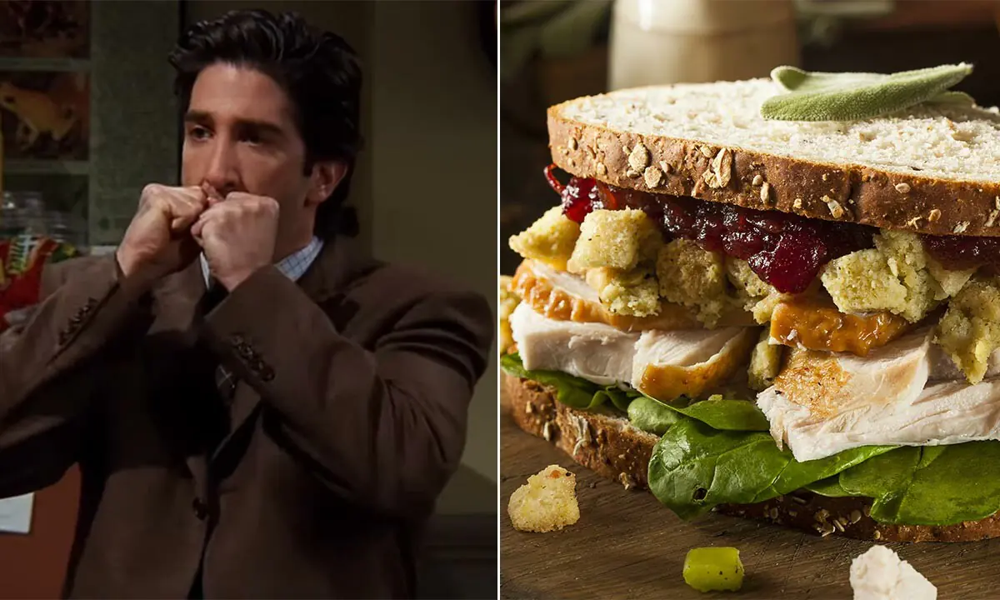

The Moist Maker

The Moist Maker AKA Monica's Thanksgiving leftover sandwich
You'll soon see why Ross is obsessed with Monica's Thanksgiving leftover sandwich. He calls it that because of
the extra piece of gravy soaked bread in the middle and it really takes this sandwich over the top. It's huge
but you'll want to finish every single bite.
Ingredients
For the gravy:
- 3 tbsp butter
- 3 tbsp plain flour
- 120ml turkey pan drippings
- 1 tsp freshly chopped thyme
- 1 tsp freshly chopped rosemary
- 480ml low-sodium chicken or turkey stock
- salt
For Herb mayo:
- 120g mayonnaise
- 2 tbsp dijon mustard
- 2 tsp freshly chopped parsley
- 1 tsp freshly chopped thyme
- 1 tsp freshly chopped chives
For the Sandwich
- 9 Slices white bread, toasted
- 450g leftover turkey, sliced
- 325g leftover mashed potatoes
- 275g cranberry sauce
- 100g leftover stuffing
- lettuce
Return to main page